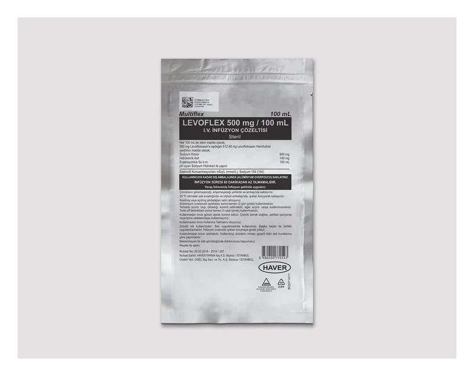

Multiflex Levoflex 500 mg/100 ml IV İnfüzyon Çözeltisi ,100 ml

Ne için kullanılır
KT · Bölüm 1MULTİFLEX LEVOFLEX, damar içine uygulanan berrak, yeşilimsi sarı renkte bir çözeltidir. MULTİFLEX LEVOFLEX, her 1 mL’sinde 5 mg levofloksasin içeren, toplam 100 mL çözelti içeren polipropilen (non-PVC) torbalarda sunulmaktadır. MULTİFLEX LEVOFLEX bakterilere karşı etkili bir antibiyotiktir. Florokinolonlar adı verilen antibiyotik grubuna dahildir. Bakterilerin büyümesini, çoğalmasını engeller ve bakterilerin yok olmasını sağlar.
MULTİFLEX LEVOFLEX etkin maddesi olan levofloksasine karşı duyarlı olan bakterilerin neden olduğu enfeksiyonların tedavisinde kullanılır. Doktorunuz antibiyotik tedavisini ağızdan alamayacak durumda olduğunuz için damar içine uygulanacak MULTİFLEX LEVOFLEX’i, sizde aşağıdaki durumlardan biri bulunduğu için reçete etmiş olabilir: • Toplumdan edinilmiş zatürre (pnömoni) • İdrar yolları ve böbrekte gelişen iltihap (piyelonefrit) dahil, komplikasyonlu böbrek ve idrar yolu enfeksiyonları • Prostat iltihabı • Deri ve yumuşak doku enfeksiyonları: Abse (irin kesesi), selülit, furonkül, impetigo (derinin bulaşıcı yüzeysel mikrobik enfeksiyonu), piyoderma (irinli deri enfeksiyonu), yara enfeksiyonlarının neden olduğu komplikasyonsuz deri ve deri ekleri enfeksiyonları. • Hastanede edinilmiş zatürre (pnömoni) • Havaya karışmış şarbon mikrobuna maruz kalma